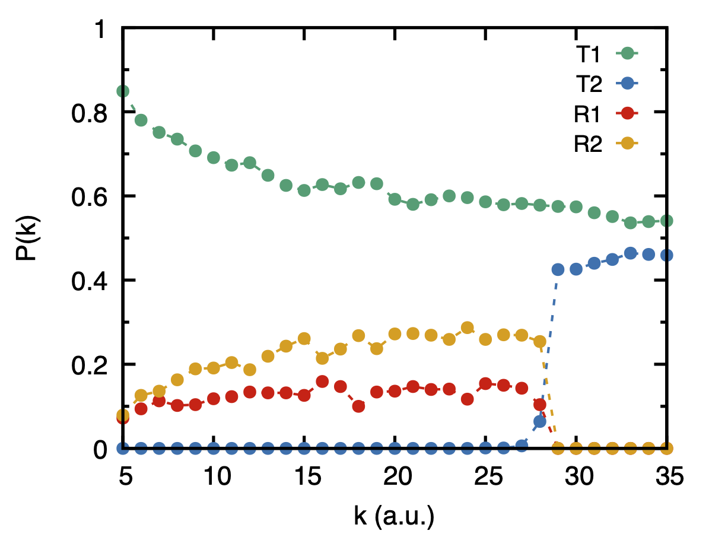

Tully Model-III (Branching Probability)
This tutorial demonstrates how to calculate the branching probability in the Tully model III with the RPSH method for a range of k-values (initial momentum).
Follow the steps below to perform the simulation.
Prepare Base Input File
Create a base input parameter file base_param.in that specifies the system model parameters. This file serves as the template for all k values.
#tully model-III input parameter model tully3 ncore 1 nbeads 8 . . pinit pval acckval yes . . . finishNote
Ensure that
acckval yesinbase_param.into obtain the branching probability results at eachkvalue.
Run Simulation
Run the provided branching job script job_script_branching.sh.
$ sh job-script-branching.sh
This script will:
Create the required number of run* directories based on the
kvalues.Submit and run the simulations inHPC cluster.
After all simulations are completed, the script automatically collects the outputs from all directories and combines them.
The final result is pot_branch_all.out for the specified k values.
Note
Make sure to modify the range and increment of
kinjob_script_branching.shto match the desired initial momentum values, e.g.:kmin=5 #minimum k-value kmax=20 #maximum k-value dk=0.5 #increment of k
Plot Branching Probability
Use any visualization tool to plot the branching probability results.
The output file pop_branch_all.out has the following structure:
First column:
kvalues (initial momentum)Second column: Transmission probability in state 1
Third column: Transmission probability in state 2
Fourth column: Reflection probability in state 1
Fifth column: Reflection probability in state 2
Gnuplot script plot-branch.gnu looks like:
#!/usr/bin/gnuplot set terminal pdf size 4in,3in enhanced color font 'Helvetica,16' set border lw 2.5 set tics scale 1.2 set output 'fig-tully3-branch.pdf' set key samplen 1.0 spacing 1.3 font "Helvetica, 14" set multiplot layout 1,1 set xlabel 'k (a.u.)' set ylabel 'P(k)' set mytics 2 set ytics 0.2 set xtics 5 set yr[0:1] ps=0.7 plot 'pop_branch_all.out' u 1:2 w lp lc 2 lw 2 dt 2 pt 7 ps ps t'T1',\ 'pop_branch_all.out' u 1:3 w lp lc 6 lw 2 dt 2 pt 7 ps ps t'T2',\ 'pop_branch_all.out' u 1:4 w lp lc 7 lw 2 dt 2 pt 7 ps ps t'R1',\ 'pop_branch_all.out' u 1:5 w lp lc 4 lw 2 dt 2 pt 7 ps ps t'R2' Fig. 3 Branching probabilities as a function of the initial k for Tully Model III using RPSH method.
{kind=link}